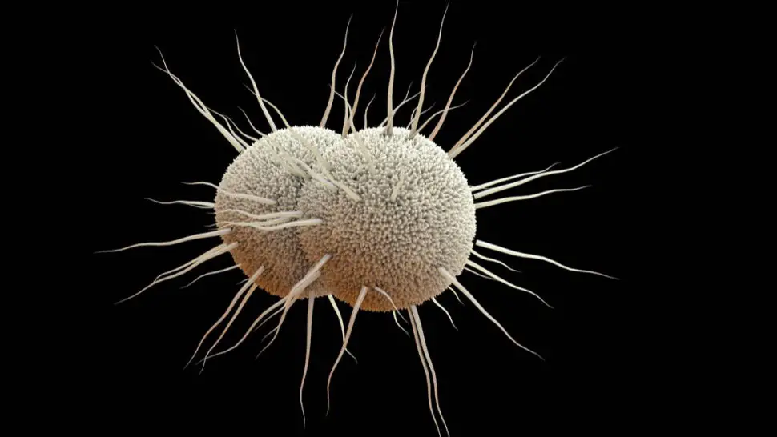

Les infections à gonocoque
Les infections urétrales causées par N. gonorrhoeae peuvent produire des symptômes chez les hommes qui les amènent à rechercher un traitement curatif assez tôt pour prévenir les séquelles, mais souvent pas assez tôt pour empêcher la transmission à d'autres. Chez les femmes, les infections gonococciques sont généralement asymptomatiques ou peuvent ne pas produire de symptômes reconnaissables jusqu'à ce que des complications se soient produites.
Le dépistage annuel de l'infection à N. gonorrhoeae (diagnostic de gonococcie) est recommandé pour toutes les femmes sexuellement actives âgées de moins de 25 ans et pour les femmes plus âgées présentant un risque accru d'infection. Les autres facteurs de risque de gonorrhée comprennent l'utilisation irrégulière du préservatif chez les personnes qui ne sont pas dans des relations mutuellement monogames, les IST antérieures ou coexistantes et l'échange de relations sexuelles contre de l'argent ou de la drogue. Les cliniciens doivent tenir compte des communautés qu'ils desservent et consulter les autorités locales de santé publique pour obtenir des conseils sur l'identification des groupes à risque accru.
L'infection gonococcique, en particulier, est concentrée dans des lieux géographiques et des communautés spécifiques. Le dépistage de la gonorrhée chez les hommes et les femmes hétérosexuels âgés de plus de 25 ans à faible risque d'infection n'est pas recommandé.

Sommaire
- Les infections sexuellement transmissibles (IST)
- Gonocoque : une IST à prévenir de toute urgence
- Gonocoque (Neisseria gonorrhoeae) : quelle période d’incubation ?
- Quels sont les symptômes des infections à gonocoque (gonorrhée, blennorragie, urétrite gonococcique aiguë, gonocoque anal,…) ?
- Symptômes d’une infection à gonocoque (« chaude-pisse ») chez la femme et chez l’homme
- Comment se manifeste la gonorrhée chez la femme ?
- Quels sont les symptômes de la gonococcie chez l'homme ?
- Peut-on contracter une infection à gonocoque sans rapport sexuel ?
- Comment prévenir l’augmentation de la transmission de la gonorrhée ?
- PCR et gonocoque : dépistage d’une infection souvent asymptomatique
- Traitement de la gonococcie : comment soigner et traiter le gonocoque (gonorrhée) ?
- Gonocoque et traitement antibiotique
- Sources
Gonocoque : une IST à prévenir de toute urgence
Gonocoque (Neisseria gonorrhoeae) : quelle période d’incubation ?
Quels sont les symptômes des infections à gonocoque (gonorrhée, blennorragie, urétrite gonococcique aiguë, gonocoque anal,…) ?
Comment prévenir l’augmentation de la transmission de la gonorrhée ?
PCR et gonocoque : dépistage d’une infection souvent asymptomatique
Traitement de la gonococcie : comment soigner et traiter le gonocoque (gonorrhée) ?
Gonocoque et traitement antibiotique
Sources
- Maladies infectieuses et infections sexuellement transmissibles. Ameli. Assurance Maladie. 2020. https://www.ameli.fr/
- Ligon BL. Albert Ludwig Sigesmund Neisser: discoverer of the cause of gonorrhea. Semin Pediatr Infect Dis. 2005 Oct;16(4):336-41. doi: 10.1053/j.spid.2005.07.001. PMID: 16210113. https://pubmed.ncbi.nlm.nih.gov/
- Plus d'un million de cas d'infections sexuellement transmissibles. OMS. https://www.who.int/f
- Prévenir de toute urgence la propagation de la gonorrhée incurable. Note d'information aux médias. OMS (Organisation mondiale de la Santé) 2012. https://www.who.int/
- Chapitre 5 - Les neisseria. Médecine. diversité de la Sorbonne. http://www.chups.jussieu.fr/
- La gonococcie ano-rectale. Dr Marianne Eléouet-Kaplan, MSPB-Bagatelle, Talence. Société Nationale Française de Colo-Proctologie (SNFCP). Septembre 2016. https://www.snfcp.org/
- Blennorragie. Par Sheldon R. Morris , MD, MPH, University of California San Diego. Le manuel MSD. 2019. https://www.msdmanuals.com/
- Leucocytes et cellules épithéliales. FGFRM (Fondation Genevoise pour la Formation et la Recherche Médicales). https://www.gfmer.ch/
- Item 112 : Réaction inflammatoire : aspects biologiques et cliniques, conduite à tenir. Association des Collèges des Enseignants d'Immunologie des Universités de Langue française. Université Médicale Virtuelle Francophone. http://campus.cerimes.fr/
- Infections urogénitales à gonocoque et Chlamydia trachomatis (en dehors de la maladie de Nicolas Favre) (95b). Professeur Jean-Claude BEANI - Janvier 2004 (Mise à jour mai 2005). http://www-sante.ujf-grenoble.fr/
- Gonorrhée. Société des obstétriciens et gynécologues du Canada. https://www.sexandu.ca/
- Fairley CK, Hocking JS, Zhang L, Chow EP. Frequent Transmission of Gonorrhea in Men Who Have Sex with Men. Emerg Infect Dis. 2017;23(1):102-104. doi:10.3201/eid2301.161205. https://www.ncbi.nlm.nih.gov/
- Farhi D, Dupin N. Infections sexuellement transmissibles. Gonococcies, chlamydioses, syphilis. Rev Prat 2007;57(13):1471-80.
- Polymerase Chain Reaction (PCR) Fact Sheet. Polymerase chain reaction (PCR) is a technique used to "amplify" small segments of DNA. Genomics 101. 2020. https://www.genome.gov/
- Ho BS, Feng WG, Wong BK, Egglestone SI. Polymerase chain reaction for the detection of Neisseria gonorrhoeae in clinical samples. J Clin Pathol. 1992;45(5):439-442. doi:10.1136/jcp.45.5.439. https://www.ncbi.nlm.nih.gov/
- Infection à chlamydia trachomatis- NHS. French. 2008. Queen’s Printer and Controller of HMSO. https://www.nhs.uk/
- Dépistage et prise en charge de l’infection à Neisseria gonorrhoeae : état des lieux et propositions. HAS (Haute Autorité de Santé). 2010. https://www.has-sante.fr/
- Antibiotique de la famille des céphalosporines. Vidal. 2020. https://www.vidal.fr/
- Antibiotique de la famille des macrolides. Vidal. 2020. https://www.vidal.fr/
- Urétrites et cervicites : une prise en charge étendue aux partenaires sexuels. HAS 2019. https://www.has-sante.fr/
- Bodie M, Gale-Rowe M, Alexandre S, Auguste U, Tomas K. et Martin I. Considérations portant sur les taux croissants de gonorrhée et de gonorrhée résistante aux médicaments : il n’y a pas de temps à perdre. Relevé des maladies transmissibles au Canada 2019;45(2/3):58–67. https://doi.org/
- Gonococcie urogénitale. Ceftriaxone en premier choix probabiliste, avec l'azithromycine contre les Chlamydia. 2014. PDF. http://www.bichat-larib.com/
- Le traitement de la salpingite (salpingites gonococciques). salpingite avec risque chez les femmes et chez les hommes. Ameli. Assurance Maladie. 2020. https://www.ameli.fr/